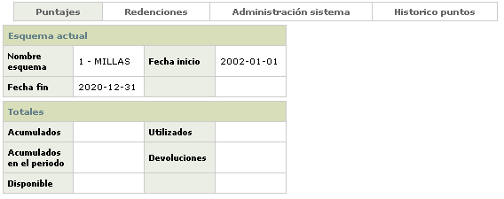
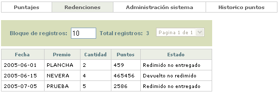
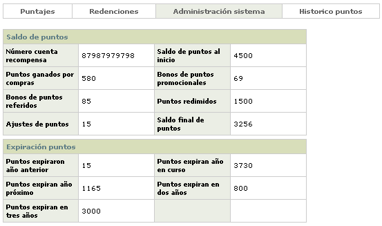
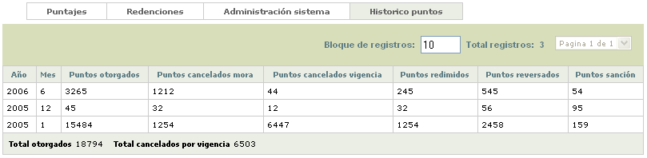

Puntajes |
En este formulario que se invoca desde el menú de Lealtad o desde el detalle consulta de la tarjeta en el hipervínculo información básica, se puede consultar toda la información de la tarjeta o el crédito rotativo, relacionada con la acumulación de puntos a través de los diferentes programas asociados al producto.
Toda la información desplegada es sólo de consulta por lo cual ninguno de los formularios de puntajes contiene las opciones Adicionar, Actualizar ni Eliminar.
La opción cuenta con cuatro hipervínculos desde los cuales se invocan los formularios en los cuales el usuario encuentra agrupada la información de puntajes correspondiente la tarjeta que se está consultando: Puntajes, Redenciones, Administración sistema e Histórico. Por defecto, cuando se ingresa al formulario siempre se despliega en el hipervínculo de Puntajes que se encuentra estructurado en dos bloques de datos: Esquema actual y Totales.

Descripci�n de campos
|
Nombre esquema |
Campo que muestra el nombre del esquema al que se encuentra asociado la tarjeta. |
Fecha inicio |
Este campo despliega en formato YYYY-MM-DD la fecha desde la cual aplica o tiene vigencia el esquema al que pertenece la tarjeta. |
Fecha
fin |
Campo en formato YYYY-MM-DD que contien la fecha hasta la que tiene vigencia el esquema al que pertence la tarjeta. |
Acumulados |
Este
campo señala la cantidad de puntos acumulados por la tarjeta
desde el inicio de la vigencia del esquema y de acuerdo con las condiciones
del mismo. |
Acumulados
en el periodo |
Campo en el que se muestra la cantidad de puntos ganados o acumulados por la tarjeta durante el periodo actual. |
Utilizados |
Este campo indica la cantidad de los puntos que fue utilizada por el tarjeta habiente para redimir premios. |
Devoluciones |
Campo que contiene la cantidad de puntos que le fueron reintegrados a la tarjeta por procesos de ajustes. |
Disponible |
En este campo se indica el total de puntos que la tarjeta tiene disponible a la fecha para ser utilizados por el titular de la misma. |
Redenciones: si el actor invoca el hipervínculo Redenciones, se despliega un nuevo formulario con el detalle de las utilizaciones de puntos que el tarjeta habiente ha hecho para obtener los premios ofrecidos por la entidad.

Descripci�n de campos
Fecha |
Este campo indica en formato YYYY-MM-DD la fecha en la cual se hizo efectiva la redención de puntos por parte del tarjeta habiente. |
Premio |
Campo que señala el premio que fue reclamado o redimido por el tarjeta habiente con los puntos acumulados en la tarjeta. |
Cantidad |
Este campo contiene la cantidad de unidades de la misma mercancía o premio que el tarjeta habiente reclamó o redimió. |
Puntos |
Campo que contiene la cantidad de puntos utilizados por el tarjeta habiente para la redención del premio correspondiente. |
Estado |
En
este campo se indica según corresponda, el estado actual
en que se encuentra la redención del premio y que puede ser
Redimido entregado o Devuelto no redimido. |
Administración sistema: si el actor invoca el hipervínculo Administración sistema, se despliega un nuevo formulario estructurado en dos bloques de datos y que muestra tanto el resumen de los puntos generados como el de los puntos vencidos o por vencer en el caso de no ser utilizados oportunamente por el tarjeta habiente.

Descripci�n de campos
Número
cuenta recompensa |
Este campo de uso exclusivo para el producto Platinum e Infinity, contiene el número adicional, incluido en la tarjeta, que facilitara la administración de los puntos de manera independiente a los valores monetarios. |
Saldo
de puntos al inicio |
Campo que señala la cantidad de puntos que la tarjeta tenía al comienzo y que aplica principalmente cuando se hacen migraciones de otros sistemas. |
Puntos
ganados por compras |
En
este campo se muestra la cantidad acumulada de puntos que la tarjeta
ha obtenido por las compras efectuadas de acuerdo con las condiciones
del esquema al que pertenece. |
Bonos
de puntos promocionales |
Campo que contiene la cantidad de puntos ganados por la tarjeta a través de las promociones definidas para el esquema. |
Bonos
de puntos referidos |
En este campo se indica la cantidad de puntos que se han generado para la tarjeta por los clientes referidos que el titular de la tarjeta ha presentado a la entidad. |
Puntos redimidos |
Campo que despliega la cantidad total de puntos de la tarjeta que el cliente ha utilizado para redimir puntos y/o millas. |
Ajuste de puntos |
Indica la cantidad de puntos que han sido reintegrados a la tarjeta por efecto de ajustes, devoluciones de premios, puntos abonados equivocadamente a la tarjeta entre otras posibles causas. |
Saldo
final de puntos |
En este campo se muestra la cantidad total de puntos de la tarjeta que están disponibles para ser utilizados por el titular. |
Puntos
expiraron año anterior |
Campo que contiene la cantidad de puntos que vencieron durante el año inmediatamente anterior por no haber sido utilizados o redimidos oportunamente. |
Puntos
expiran año en curso |
En este campo se muestra la cantidad de puntos próximos a vencer en el año actual en caso que no sean utilizados por el tarjeta habiente, tomando en cuenta para el cálculo la fecha de vigencia del esquema. |
Puntos
expiran año próximo / en dos años / en tres
años |
Campos que señalan respectivamente, la cantidad de puntos que pueden vencerse durante el año siguiente, los dos próximos años o dentro de tres años en caso que el tarjeta habiente no haga uso de ellos. Al igual que en el caso anterior, para el cálculo se toma en cuenta la fecha de vigencia del esquema |
Histórico: si el actor invoca el hipervínculo Histórico, se despliega un nuevo formulario con el detalle por año y mes de los puntos obtenidos, redimidos y expirados de la tarjeta ha tenido.

Descripci�n de campos
Año |
Este campo indica el año para el cual se está mostrando el histórico de puntos. |
Mes |
Campo que contiene el mes al que corresponde la información de histórico de puntos presentada. |
Puntos
otorgados |
En este campo se muestra el total de los puntos que se le otorgaron a la tarjeta en el mes y año respectivo de acuerdo con las condiciones del esquema al cual pertenece. |
Puntos
cancelados por mora |
Campo que contiene la cantidad de puntos que le fueron cancelados a la tarjeta durante el mes y año por haber ingresado en estado de mora y de acuerdo con las condiciones del esquema. |
Puntos
cancelados vigencia |
Este
campo muestra la cantidad de puntos que le fueron cancelados
a la tarjeta en el mes y año respectivos por haberse
vencido o expirado. |
Puntos redimidos |
Campo que despliega la cantidad de puntos que el tarjeta habiente redimió o utilizó durante el mes y año indicados. |
Puntos reversados |
Indica para el mes y año respectivos la cantidad de puntos que le fueron reversados a la tarjeta bien por ajustes efectuados o por reversión de las transacciones con las cuales se generaron dichos puntos. |
Puntos
sanción |
En este campo se muestra la cantidad de puntos que le fueron anulados a la tarjeta a manera de sanción en el año y mes indicados, de acuerdo con las condiciones del esquema al que pertenece la misma. |
Total
otorgados |
Campo que contiene la sumatoria de los puntos otorgados a la tarjeta de acuerdo con las condiciones del esquema asociado a la misma. |
Total
cancelados por vigencia |
Este campo despliega la sumatoria de los puntos que han expirado o se encuentran vencidos por no haber sido utilizados oportunamente. |